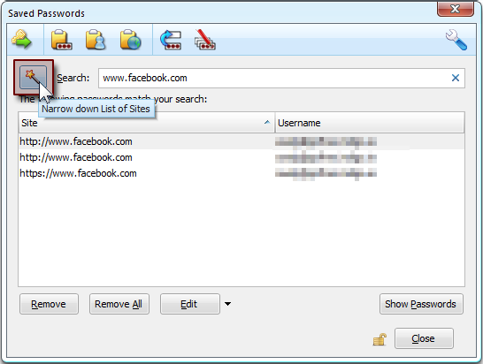
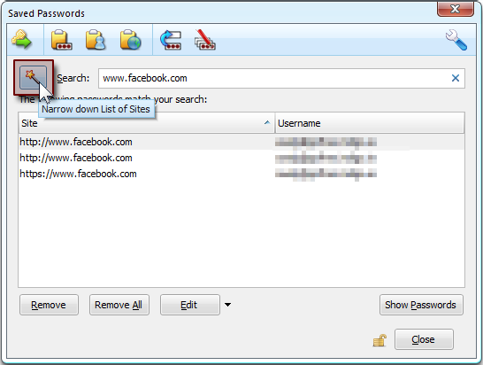
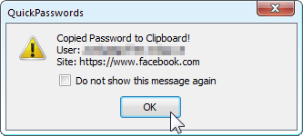
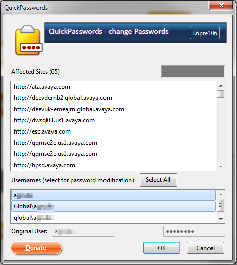
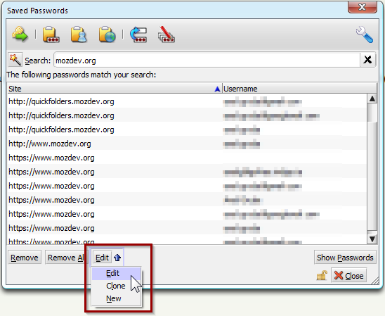
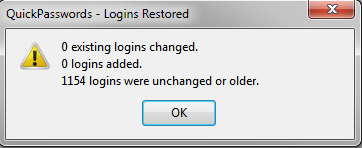

Welcome to the new home of the QuickPasswords project. If your looking for the latest version you can download it at Mozilla
Please, leave some feedback at the mozilla addons page - spread the word so more people start using it!
Quickly retrieve your Passwords from Password Manager to the clipboard. No need to display them on screen anymore!
Instead of displaying a password, when you need one, use this nifty toolbar button to jump straight to the password manager and copy it to the clipboard.
I was always annoyed by the fact that the Password Manage displays not just one Password but a whole list - this extension removes the need to display any password on screen, and gets rid of the inconvenient "typing off screen". Now your passwords can be as complicated and secure as you always wanted!
Also, it fills in the domain name so you don't have to look quite so hard. Especially useful for developers who have to work a lot with different login pages.
You can either use the toolbar button:
Or right-click any textbox on the page 
Now that we are in the Password Manager, a login line is automatically selected. Either leave it there or select a different login. Then:
Click on the Login button:

Or use the context menu - "Login to WebSite" is the top command, once we click this...

Once the login command is selected the Password Manager window closes (there is an option for disabling this). If the option to "Fill form on Login command" is active, the user name and password are filled in automatically. Without this option (or if the automatic filling fails for some reason) there are now 2 new items in the context menu:

You can insert both User Id and Password with a simple right-click. The clipboard is not used during this operation. For security reasons, the items are removed from the menu as soon as you use them.

If have not used these for some reason, you can remove them from the context menu using "Cancel QuickPassword Login"

Make sure to add it to your toolbar, the usual way - View / Toolbars / Customize.
Or if the "view" menu is not visible because the main Firefox menu is hidden,
use the "Firefox" button instead: Firefox Button > Options > Toolbar Layout...
Just pull it where you want it and click Done or Ok. Then, your Firefox / SeaMonkey / Thunderbird should look something like this:

After clicking the button the Password Manager is opened. This will now show a filtered list based on the web page you are on when you clicked it:

Now, click on the line for the user credentials you are interested in. Too many different matches? this can happen if you have passwords on a big site that has a lot of sub-sites
In this case, you can click the magic wand, to narrow down the number of matches:
 

Click the [Copy Password!] button.

As the message says, the password is now in your clipboard so you can click the password field and paste (CTRL+V).
For streamlined operation, you can configure QuickPasswords to suppress this message as well - go to Tools / Add-Ons and find the entry for QuickPasswords, then click Options.
Like the message says, you now have the password in your clipboard - just paste it whereever you need it. Be it on another web form, in a different browser or in a text file. This also removes the need to ever "Show Passwords" on screen.
Alternatively, use the context menu by right-clicking the entry you want: This will give you the following 4 options:

As for the last option you can also include a header line for convenient use in spread sheets.

You can now change the password to one web site or multiple sites of a Single Signon Domain (provided they have matching passwords). Simply use the magic wand in the password manager first to display all sites of your domain (e.g. google.com).
Then press the [change multiple passwords] button.

The "old password" field will be pre-filled correctly. Now click on [Select all entries that match]. This will highlight all items that satisfy the filter in the Password Manager (in this example, all ending with google.com) AND have the same password. Enter a new one below. Now you can change passwords for all these entries by clicking on [Ok]!
in the next step, all affected sites are displayed (top list). QuickPasswords will also extract all user names in case you have variations within the SSO domain, such as "user", "domain\user", "domain\User". You simply select the user names from the bottom list so only those are affected.
The very clever Saved Password Editor Extension is highly recommended and can be used in conjunction with the QuickPasswords extension. It basically allows to edit existing password (and the related form information), but also add new ones or clone existing ones.

Use this to backup / restore passwords to file. Could be used as a rescue method if Sync malfunctions. This is protected with Firefox's master password.
I don't want QuickPasswords to be the one simple way to steal your friend's passwords, so the backup / restore features are protected with the master password. Secondly, we cannot have files full of unencrypted passwords on some local storage. It's just not safe at all. So by default, QuickPasswords uses Firefox built in keystore which is a unique personalized encryption platform generated when you create a new Firefox profile or install Firefox for the first time.
This also means that you won't be able to restore the passwords on another Firefox / Profile unless you have a copy of the same keystore. Same is stored in a file called key3.db and should be backed up somewhere to read the passwords again. If you loose or break this file you will also simply not be able to read your passwords on your Firefox anymore. As long as you use the same Firefox on the same Computer this won't present a problem unless there is a file corruption. To transfer to a different machine simply copy the relevant profile folder or at least key3.db.
All of these stipulations aside, there as a couple of things that the new backup restore does well (and may be better than others). First of all, when you restore your passwords, there is one thing it does NOT do: it will not DELETE all your passwords. Instead it will merge in the passwords, carefully checking the backed up logins and the time stamps (when was it last changed). If you want to start from zero, you have to delete all passwords manually. (Make sure to back up beforehand!)
Modified passwords: Restore will only change a password if it wasn't changed in the meantime. This way you won't accidentally overwrite a password you may have changed online into an older version. However, if this is what you actually want to do with a particular login, [maybe because a password change online didn't propagate into the web] you can simply delete that one manually before doing the restore.
File handling: you can store your files wherever you like, but I would still recommend
not putting them on a public folder or shared drive, unless you have set up
correct access permissions. Better safe than sorry!

Zombie Keys for Firefox / SeaMonkey ;
Zombie Keys for Thunderbird / Postbox
Entering European languages (which include diacritics (accented characters, diaeresis, umlauts, etc.), ligatures, the Euro sign, etc.) into Mozilla applications using a non-native keyboards doesn't have to be a pain any more!
QuickFolders
(Thunderbird / Postbox) takes the pain out of working with many mail folders; has currently 22,000 daily users and the top rated message reading extensions.
quickFilters (Thunderbird / Postbox) Quickly generate mail filters on the fly, by dragging and dropping mails and analyzing their attributes.
SmartTemplate4 (Thunderbird / Postbox) SmartTemplate4 offers an easy way to customize Thunderbirds default quote header by using templates.